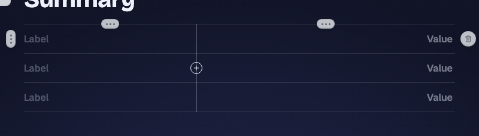
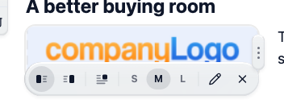
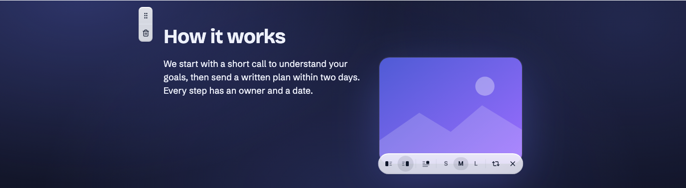
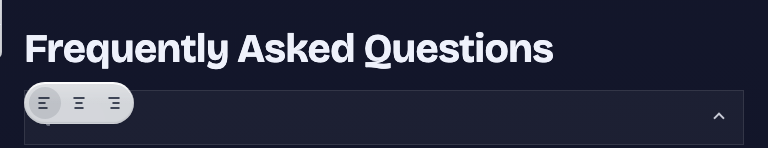
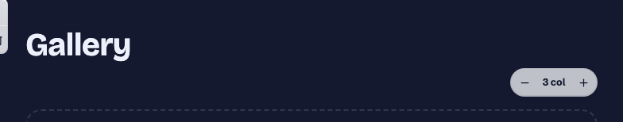
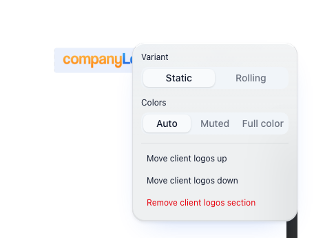

Layout controls: delete the dead ones, keep the ones one in ten pages use
Editor canvas chrome on story, gallery, logos and summary blocks.
One rule: a layout control stays when customers change it on more than one block in ten; otherwise it goes. That deletes the summary table's column insert, drag and remove (0 of 9 blocks are wider than two columns), the drag-resize grip on media (recent pages only hold the S/M/L stops), and the alignment bar on section headings (story 8%, FAQ, pricing, gallery, summary all under 10%). It keeps the hero title alignment, "Wrap text" (21% of stories with media), the gallery column stepper (5 of 13 galleries changed it) and the logos Auto / Muted / Full switch (6 of 34 chose Full).
The problem
The audit listed six layout controls to hide so that "the preset decides". The data splits them. Three are dead or duplicated. Three are used by a real share of the few customers who build beyond one block, and hiding them would silently change live pages (five galleries, six logo rows, 49 wrapped stories).
What it would look like
Each pair shows the control today on staging and the same block with the control removed.














The after mockups for gallery and logos (after-gallery.png, after-logos-row.png) show the audit's cut for comparison; the recommendation keeps both controls.
What the data says
Customer pages, production, read-only, 2026-10-13. "Non-default" uses each block's normalizer, so a legacy page that stored the default explicitly counts as default.
Heading alignment changed from the default, last 90 days
| Block | Blocks | Non-default | Share |
|---|---|---|---|
| hero | 284 | 54 | 19% |
| story | 410 | 32 | 8% |
| faq | 54 | 4 | 7% |
| pricing | 22 | 4 | 18% |
| gallery | 13 | 1 | 8% |
| logos | 34 | 0 | 0% |
| summary | 9 | 0 | 0% |
Hero stores "" as default, and legacy heroes wrote "left" or "middle" explicitly, so its 19% is partly history. Pricing's 18% is 4 blocks.
Other controls, last 90 days
| Control | Blocks that have it | Changed | Share |
|---|---|---|---|
| Summary columns beyond two | 9 | 0 | 0% |
| Media size via drag (non-stop value) | 410 stories | 0 | 0% (older pages: 191 drag values) |
| Media size S or L | 410 stories | 64 | 16% |
| Wrap text | 236 stories with media | 49 | 21% |
| Gallery columns not 3 | 13 | 5 | 38% |
| Logos colour Full | 34 | 6 | 18% |
| Logos rolling variant | 34 | 9 | 26% |
Options
Three controls go, four stay. No live page changes. Each deletion is its own small PR, and the kept controls are the ones with evidence.
Cleanest canvas, but it changes five live galleries, six logo rows and 49 wrapped stories unless the stored values keep rendering while the controls hide. Then the pages look different from what the editor offers, which breaks the WYSIWYG rule.
Moves a rarely used control instead of deleting it. More code for the same 8%.
Questions for William
Recommended: Yes. It is the same test as the usage audit, applied per control instead of per block.
Recommended: Yes. Stored alignments keep rendering, so no live page changes.
Recommended: Keep the stepper. Deriving would change five live galleries and the stepper is one control.
PRs once decided
SummaryTableEditor.tsx: delete column insert, drag and remove; rows keep add and remove. Guard: a stored block wider than two (none exist) still renders.
JourneyMediaResizer.tsx: delete the drag grip. Stored drag-era values keep rendering (191 older stories).
EditableText.tsx: the bar renders for hero title only. Stored section alignments keep rendering.